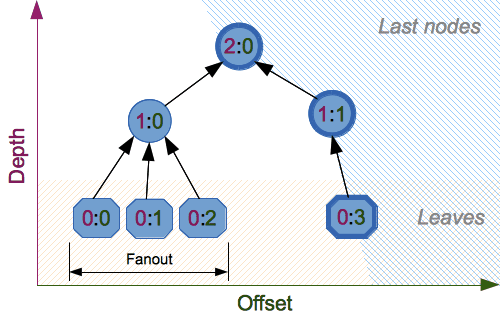

hashlib — Secure hashes and message digests
hashlib
.. moduleauthor:: Gregory P. Smith <greg@krypto.org>
.. sectionauthor:: Gregory P. Smith <greg@krypto.org>
Source code: :source:`Lib/hashlib.py`
This module implements a common interface to many different hash algorithms. Included are the FIPS secure hash algorithms SHA224, SHA256, SHA384, SHA512, (defined in the FIPS 180-4 standard), the SHA-3 series (defined in the FIPS 202 standard) as well as the legacy algorithms SHA1 (formerly part of FIPS) and the MD5 algorithm (defined in internet :rfc:`1321`).
Note
If you want the adler32 or crc32 hash functions, they are available in
the zlib module.
Hash algorithms
There is one constructor method named for each type of :dfn:`hash`. All return
a hash object with the same simple interface. For example: use sha256
to create a SHA-256 hash object. You can now feed this object with
bytes-like objects (normally bytes) using
the update method. At any point you can ask it for the
:dfn:`digest` of the concatenation of the data fed to it so far using the
digest() or hexdigest() methods.
To allow multithreading, the Python GIL is released while computing a
hash supplied more than 2047 bytes of data at once in its constructor or
.update method.
Constructors for hash algorithms that are always present in this module are
sha1, sha224, sha256, sha384, sha512,
sha3_224, sha3_256, sha3_384, sha3_512,
shake_128, shake_256, blake2b, and blake2s.
md5 is normally available as well, though it may be missing or blocked
if you are using a rare "FIPS compliant" build of Python.
These correspond to algorithms_guaranteed.
Additional algorithms may also be available if your Python distribution's
hashlib was linked against a build of OpenSSL that provides others.
Others are not guaranteed available on all installations and will only be
accessible by name via new. See algorithms_available.
Warning
Some algorithms have known hash collision weaknesses (including MD5 and SHA1). Refer to Attacks on cryptographic hash algorithms and the hashlib-seealso section at the end of this document.
New in version 3.6:
SHA3 (Keccak) and SHAKE constructors sha3_224, sha3_256,
sha3_384, sha3_512, shake_128, shake_256
were added.
blake2b and blake2s were added.
Changed in version 3.9:
All hashlib constructors take a keyword-only argument usedforsecurity
with default value True. A false value allows the use of insecure and
blocked hashing algorithms in restricted environments. False indicates
that the hashing algorithm is not used in a security context, e.g. as a
non-cryptographic one-way compression function.
Changed in version 3.9:
Hashlib now uses SHA3 and SHAKE from OpenSSL if it provides it.
Changed in version 3.12:
For any of the MD5, SHA1, SHA2, or SHA3 algorithms that the linked OpenSSL does not provide we fall back to a verified implementation from the HACL* project.
Usage
To obtain the digest of the byte string b"Nobody inspects the spammish
repetition":
>>>
>>> =
>>>
>>>
>>>
b
>>>
More condensed:
>>> hashlib.sha256(b"Nobody inspects the spammish repetition").hexdigest() '031edd7d41651593c5fe5c006fa5752b37fddff7bc4e843aa6af0c950f4b9406'
Constructors
new(name[, data], *, usedforsecurity=True)Is a generic constructor that takes the string name of the desired algorithm as its first parameter. It also exists to allow access to the above listed hashes as well as any other algorithms that your OpenSSL library may offer.
Using new with an algorithm name:
>>> h = hashlib.new('sha256') >>> h.update(b"Nobody inspects the spammish repetition") >>> h.hexdigest() '031edd7d41651593c5fe5c006fa5752b37fddff7bc4e843aa6af0c950f4b9406'
md5([, data], *, usedforsecurity=True)
sha1([, data], *, usedforsecurity=True)
sha224([, data], *, usedforsecurity=True)
sha256([, data], *, usedforsecurity=True)
sha384([, data], *, usedforsecurity=True)
sha512([, data], *, usedforsecurity=True)
sha3_224([, data], *, usedforsecurity=True)
sha3_256([, data], *, usedforsecurity=True)
sha3_384([, data], *, usedforsecurity=True)
sha3_512([, data], *, usedforsecurity=True)
Named constructors such as these are faster than passing an algorithm name to
new.
Attributes
Hashlib provides the following constant module attributes:
algorithms_guaranteedA set containing the names of the hash algorithms guaranteed to be supported by this module on all platforms. Note that 'md5' is in this list despite some upstream vendors offering an odd "FIPS compliant" Python build that excludes it.
New in version 3.2:
algorithms_availableA set containing the names of the hash algorithms that are available in the running Python interpreter. These names will be recognized when passed to
new.algorithms_guaranteedwill always be a subset. The same algorithm may appear multiple times in this set under different names (thanks to OpenSSL).New in version 3.2:
Hash Objects
The following values are provided as constant attributes of the hash objects returned by the constructors:
hash.digest_sizeThe size of the resulting hash in bytes.
hash.block_sizeThe internal block size of the hash algorithm in bytes.
A hash object has the following attributes:
hash.nameThe canonical name of this hash, always lowercase and always suitable as a parameter to
newto create another hash of this type.Changed in version 3.4:
The name attribute has been present in CPython since its inception, but until Python 3.4 was not formally specified, so may not exist on some platforms.
A hash object has the following methods:
hash.update(data)Update the hash object with the bytes-like object. Repeated calls are equivalent to a single call with the concatenation of all the arguments:
m.update(a); m.update(b)is equivalent tom.update(a+b).
hash.digest()Return the digest of the data passed to the
updatemethod so far. This is a bytes object of sizedigest_sizewhich may contain bytes in the whole range from 0 to 255.
hash.hexdigest()Like
digestexcept the digest is returned as a string object of double length, containing only hexadecimal digits. This may be used to exchange the value safely in email or other non-binary environments.
hash.copy()Return a copy ("clone") of the hash object. This can be used to efficiently compute the digests of data sharing a common initial substring.
SHAKE variable length digests
shake_128([, data], *, usedforsecurity=True)
shake_256([, data], *, usedforsecurity=True)
The shake_128 and shake_256 algorithms provide variable
length digests with length_in_bits//2 up to 128 or 256 bits of security.
As such, their digest methods require a length. Maximum length is not limited
by the SHAKE algorithm.
shake.digest(length)Return the digest of the data passed to the
updatemethod so far. This is a bytes object of size length which may contain bytes in the whole range from 0 to 255.
shake.hexdigest(length)Like
digestexcept the digest is returned as a string object of double length, containing only hexadecimal digits. This may be used to exchange the value in email or other non-binary environments.
Example use:
>>> h = hashlib.shake_256(b'Nobody inspects the spammish repetition') >>> h.hexdigest(20) '44709d6fcb83d92a76dcb0b668c98e1b1d3dafe7'
File hashing
The hashlib module provides a helper function for efficient hashing of a file or file-like object.
file_digest(fileobj, digest, /)Return a digest object that has been updated with contents of file object.
fileobj must be a file-like object opened for reading in binary mode. It accepts file objects from builtin
open,BytesIOinstances, SocketIO objects fromsocket.socket.makefile, and similar. fileobj must be opened in blocking mode, otherwise aBlockingIOErrormay be raised.The function may bypass Python's I/O and use the file descriptor from
filenodirectly. fileobj must be assumed to be in an unknown state after this function returns or raises. It is up to the caller to close fileobj.digest must either be a hash algorithm name as a str, a hash constructor, or a callable that returns a hash object.
Example:
>>> import io, hashlib, hmac >>> with open("library/hashlib.rst", "rb") as f: ... digest = hashlib.file_digest(f, "sha256") ... >>> digest.hexdigest() '...'>>> buf = io.BytesIO(b"somedata") >>> mac1 = hmac.HMAC(b"key", digestmod=hashlib.sha512) >>> digest = hashlib.file_digest(buf, lambda: mac1)
>>> digest is mac1 True >>> mac2 = hmac.HMAC(b"key", b"somedata", digestmod=hashlib.sha512) >>> mac1.digest() == mac2.digest() True
New in version 3.11:
Changed in version 3.14:
Now raises a
BlockingIOErrorif the file is opened in non-blocking mode. Previously, spurious null bytes were added to the digest.
Key derivation
Key derivation and key stretching algorithms are designed for secure password
hashing. Naive algorithms such as sha1(password) are not resistant against
brute-force attacks. A good password hashing function must be tunable, slow, and
include a salt.
pbkdf2_hmac(hash_name, password, salt, iterations, dklen=None)The function provides PKCS#5 password-based key derivation function 2. It uses HMAC as pseudorandom function.
The string hash_name is the desired name of the hash digest algorithm for HMAC, e.g. 'sha1' or 'sha256'. password and salt are interpreted as buffers of bytes. Applications and libraries should limit password to a sensible length (e.g. 1024). salt should be about 16 or more bytes from a proper source, e.g.
os.urandom.The number of iterations should be chosen based on the hash algorithm and computing power. As of 2022, hundreds of thousands of iterations of SHA-256 are suggested. For rationale as to why and how to choose what is best for your application, read Appendix A.2.2 of NIST-SP-800-132. The answers on the stackexchange pbkdf2 iterations question explain in detail.
dklen is the length of the derived key in bytes. If dklen is
Nonethen the digest size of the hash algorithm hash_name is used, e.g. 64 for SHA-512.>>> from hashlib import pbkdf2_hmac >>> our_app_iters = 500_000 # Application specific, read above. >>> dk = pbkdf2_hmac('sha256', b'password', b'bad salt' * 2, our_app_iters) >>> dk.hex() '15530bba69924174860db778f2c6f8104d3aaf9d26241840c8c4a641c8d000a9'Function only available when Python is compiled with OpenSSL.
New in version 3.4:
Changed in version 3.12:
Function now only available when Python is built with OpenSSL. The slow pure Python implementation has been removed.
scrypt(password, *, salt, n, r, p, maxmem=0, dklen=64)The function provides scrypt password-based key derivation function as defined in :rfc:`7914`.
password and salt must be bytes-like objects. Applications and libraries should limit password to a sensible length (e.g. 1024). salt should be about 16 or more bytes from a proper source, e.g.
os.urandom.n is the CPU/Memory cost factor, r the block size, p parallelization factor and maxmem limits memory (OpenSSL 1.1.0 defaults to 32 MiB). dklen is the length of the derived key in bytes.
New in version 3.6:
BLAKE2
.. sectionauthor:: Dmitry Chestnykh
BLAKE2 is a cryptographic hash function defined in :rfc:`7693` that comes in two flavors:
BLAKE2b, optimized for 64-bit platforms and produces digests of any size between 1 and 64 bytes,
BLAKE2s, optimized for 8- to 32-bit platforms and produces digests of any size between 1 and 32 bytes.
BLAKE2 supports keyed mode (a faster and simpler replacement for HMAC), salted hashing, personalization, and tree hashing.
Hash objects from this module follow the API of standard library's
hashlib objects.
Creating hash objects
New hash objects are created by calling constructor functions:
blake2b(data=b'', *, digest_size=64, key=b'', salt=b'', \person=b'', fanout=1, depth=1, leaf_size=0, node_offset=0, \node_depth=0, inner_size=0, last_node=False, \usedforsecurity=True)
blake2s(data=b'', *, digest_size=32, key=b'', salt=b'', \person=b'', fanout=1, depth=1, leaf_size=0, node_offset=0, \node_depth=0, inner_size=0, last_node=False, \usedforsecurity=True)
These functions return the corresponding hash objects for calculating BLAKE2b or BLAKE2s. They optionally take these general parameters:
data: initial chunk of data to hash, which must be bytes-like object. It can be passed only as positional argument.
digest_size: size of output digest in bytes.
key: key for keyed hashing (up to 64 bytes for BLAKE2b, up to 32 bytes for BLAKE2s).
salt: salt for randomized hashing (up to 16 bytes for BLAKE2b, up to 8 bytes for BLAKE2s).
person: personalization string (up to 16 bytes for BLAKE2b, up to 8 bytes for BLAKE2s).
The following table shows limits for general parameters (in bytes):
Hash |
digest_size |
len(key) |
len(salt) |
len(person) |
|---|---|---|---|---|
BLAKE2b |
64 |
64 |
16 |
16 |
BLAKE2s |
32 |
32 |
8 |
8 |
Note
BLAKE2 specification defines constant lengths for salt and personalization
parameters, however, for convenience, this implementation accepts byte
strings of any size up to the specified length. If the length of the
parameter is less than specified, it is padded with zeros, thus, for
example, b'salt' and b'salt\x00' is the same value. (This is not
the case for key.)
These sizes are available as module constants described below.
Constructor functions also accept the following tree hashing parameters:
fanout: fanout (0 to 255, 0 if unlimited, 1 in sequential mode).
depth: maximal depth of tree (1 to 255, 255 if unlimited, 1 in sequential mode).
leaf_size: maximal byte length of leaf (0 to
2**32-1, 0 if unlimited or in sequential mode).node_offset: node offset (0 to
2**64-1for BLAKE2b, 0 to2**48-1for BLAKE2s, 0 for the first, leftmost, leaf, or in sequential mode).node_depth: node depth (0 to 255, 0 for leaves, or in sequential mode).
inner_size: inner digest size (0 to 64 for BLAKE2b, 0 to 32 for BLAKE2s, 0 in sequential mode).
last_node: boolean indicating whether the processed node is the last one (
Falsefor sequential mode).

See section 2.10 in BLAKE2 specification for comprehensive review of tree hashing.
Constants
blake2b.SALT_SIZE
blake2s.SALT_SIZE
Salt length (maximum length accepted by constructors).
blake2b.PERSON_SIZE
blake2s.PERSON_SIZE
Personalization string length (maximum length accepted by constructors).
blake2b.MAX_KEY_SIZE
blake2s.MAX_KEY_SIZE
Maximum key size.
blake2b.MAX_DIGEST_SIZE
blake2s.MAX_DIGEST_SIZE
Maximum digest size that the hash function can output.
Examples
Simple hashing
To calculate hash of some data, you should first construct a hash object by
calling the appropriate constructor function (blake2b or
blake2s), then update it with the data by calling update on the
object, and, finally, get the digest out of the object by calling
digest (or hexdigest for hex-encoded string).
>>> from hashlib import blake2b >>> h = blake2b() >>> h.update(b'Hello world') >>> h.hexdigest() '6ff843ba685842aa82031d3f53c48b66326df7639a63d128974c5c14f31a0f33343a8c65551134ed1ae0f2b0dd2bb495dc81039e3eeb0aa1bb0388bbeac29183'
As a shortcut, you can pass the first chunk of data to update directly to the constructor as the positional argument:
>>> from hashlib import blake2b >>> blake2b(b'Hello world').hexdigest() '6ff843ba685842aa82031d3f53c48b66326df7639a63d128974c5c14f31a0f33343a8c65551134ed1ae0f2b0dd2bb495dc81039e3eeb0aa1bb0388bbeac29183'
You can call hash.update as many times as you need to iteratively
update the hash:
>>> from hashlib import blake2b >>> items = [b'Hello', b' ', b'world'] >>> h = blake2b() >>> for item in items: ... h.update(item) ... >>> h.hexdigest() '6ff843ba685842aa82031d3f53c48b66326df7639a63d128974c5c14f31a0f33343a8c65551134ed1ae0f2b0dd2bb495dc81039e3eeb0aa1bb0388bbeac29183'
Using different digest sizes
BLAKE2 has configurable size of digests up to 64 bytes for BLAKE2b and up to 32 bytes for BLAKE2s. For example, to replace SHA-1 with BLAKE2b without changing the size of output, we can tell BLAKE2b to produce 20-byte digests:
>>> from hashlib import blake2b >>> h = blake2b(digest_size=20) >>> h.update(b'Replacing SHA1 with the more secure function') >>> h.hexdigest() 'd24f26cf8de66472d58d4e1b1774b4c9158b1f4c' >>> h.digest_size 20 >>> len(h.digest()) 20
Hash objects with different digest sizes have completely different outputs (shorter hashes are not prefixes of longer hashes); BLAKE2b and BLAKE2s produce different outputs even if the output length is the same:
>>> from hashlib import blake2b, blake2s >>> blake2b(digest_size=10).hexdigest() '6fa1d8fcfd719046d762' >>> blake2b(digest_size=11).hexdigest() 'eb6ec15daf9546254f0809' >>> blake2s(digest_size=10).hexdigest() '1bf21a98c78a1c376ae9' >>> blake2s(digest_size=11).hexdigest() '567004bf96e4a25773ebf4'
Keyed hashing
Keyed hashing can be used for authentication as a faster and simpler replacement for Hash-based message authentication code (HMAC). BLAKE2 can be securely used in prefix-MAC mode thanks to the indifferentiability property inherited from BLAKE.
This example shows how to get a (hex-encoded) 128-bit authentication code for
message b'message data' with key b'pseudorandom key':
>>>
>>> =
>>>
>>>
As a practical example, a web application can symmetrically sign cookies sent to users and later verify them to make sure they weren't tampered with:
>>>
>>>
>>>
>>> = b
>>> = 16
>>>
>>> :
... =
...
... return
>>>
>>> :
... =
... return
>>>
>>> = b
>>> =
>>>
-,b
>>>
True
>>>
False
>>>
FalseEven though there's a native keyed hashing mode, BLAKE2 can, of course, be used
in HMAC construction with hmac module:
>>>
>>> =
>>>
>>>
Randomized hashing
By setting salt parameter users can introduce randomization to the hash function. Randomized hashing is useful for protecting against collision attacks on the hash function used in digital signatures.
Randomized hashing is designed for situations where one party, the message preparer, generates all or part of a message to be signed by a second party, the message signer. If the message preparer is able to find cryptographic hash function collisions (i.e., two messages producing the same hash value), then they might prepare meaningful versions of the message that would produce the same hash value and digital signature, but with different results (e.g., transferring $1,000,000 to an account, rather than $10). Cryptographic hash functions have been designed with collision resistance as a major goal, but the current concentration on attacking cryptographic hash functions may result in a given cryptographic hash function providing less collision resistance than expected. Randomized hashing offers the signer additional protection by reducing the likelihood that a preparer can generate two or more messages that ultimately yield the same hash value during the digital signature generation process — even if it is practical to find collisions for the hash function. However, the use of randomized hashing may reduce the amount of security provided by a digital signature when all portions of the message are prepared by the signer.
(NIST SP-800-106 "Randomized Hashing for Digital Signatures")
In BLAKE2 the salt is processed as a one-time input to the hash function during initialization, rather than as an input to each compression function.
Warning
Salted hashing (or just hashing) with BLAKE2 or any other general-purpose cryptographic hash function, such as SHA-256, is not suitable for hashing passwords. See BLAKE2 FAQ for more information.
Personalization
Sometimes it is useful to force hash function to produce different digests for the same input for different purposes. Quoting the authors of the Skein hash function:
We recommend that all application designers seriously consider doing this; we have seen many protocols where a hash that is computed in one part of the protocol can be used in an entirely different part because two hash computations were done on similar or related data, and the attacker can force the application to make the hash inputs the same. Personalizing each hash function used in the protocol summarily stops this type of attack.
(The Skein Hash Function Family, p. 21)
BLAKE2 can be personalized by passing bytes to the person argument:
>>>
>>> = b
>>> = b
>>> =
>>>
>>>
>>> =
>>>
>>>
Personalization together with the keyed mode can also be used to derive different keys from a single one.
>>> from hashlib import blake2s >>> from base64 import b64decode, b64encode >>> orig_key = b64decode(b'Rm5EPJai72qcK3RGBpW3vPNfZy5OZothY+kHY6h21KM=') >>> enc_key = blake2s(key=orig_key, person=b'kEncrypt').digest() >>> mac_key = blake2s(key=orig_key, person=b'kMAC').digest() >>> print(b64encode(enc_key).decode('utf-8')) rbPb15S/Z9t+agffno5wuhB77VbRi6F9Iv2qIxU7WHw= >>> print(b64encode(mac_key).decode('utf-8')) G9GtHFE1YluXY1zWPlYk1e/nWfu0WSEb0KRcjhDeP/o=
Tree mode
Here's an example of hashing a minimal tree with two leaf nodes:
10/
00 01
This example uses 64-byte internal digests, and returns the 32-byte final digest:
>>>
>>>
>>> = 2
>>> = 2
>>> = 4096
>>> = 64
>>>
>>> =
>>>
>>> # Left leaf
... =
>>> # Right leaf
... =
>>> # Root node
... =
>>>
>>>
>>>
Credits
BLAKE2 was designed by Jean-Philippe Aumasson, Samuel Neves, Zooko Wilcox-O'Hearn, and Christian Winnerlein based on SHA-3 finalist BLAKE created by Jean-Philippe Aumasson, Luca Henzen, Willi Meier, and Raphael C.-W. Phan.
It uses core algorithm from ChaCha cipher designed by Daniel J. Bernstein.
The stdlib implementation is based on pyblake2 module. It was written by Dmitry Chestnykh based on C implementation written by Samuel Neves. The documentation was copied from pyblake2 and written by Dmitry Chestnykh.
The C code was partly rewritten for Python by Christian Heimes.
The following public domain dedication applies for both C hash function implementation, extension code, and this documentation:
To the extent possible under law, the author(s) have dedicated all copyright and related and neighboring rights to this software to the public domain worldwide. This software is distributed without any warranty.
You should have received a copy of the CC0 Public Domain Dedication along with this software. If not, see https://creativecommons.org/publicdomain/zero/1.0/.
The following people have helped with development or contributed their changes to the project and the public domain according to the Creative Commons Public Domain Dedication 1.0 Universal:
Alexandr Sokolovskiy
See also
- Module
hmac A module to generate message authentication codes using hashes.
- Module
base64 Another way to encode binary hashes for non-binary environments.
- https://nvlpubs.nist.gov/nistpubs/fips/nist.fips.180-4.pdf
The FIPS 180-4 publication on Secure Hash Algorithms.
- https://csrc.nist.gov/pubs/fips/202/final
The FIPS 202 publication on the SHA-3 Standard.
- https://www.blake2.net/
Official BLAKE2 website.
- https://en.wikipedia.org/wiki/Cryptographic_hash_function
Wikipedia article with information on which algorithms have known issues and what that means regarding their use.
- https://www.ietf.org/rfc/rfc8018.txt
PKCS #5: Password-Based Cryptography Specification Version 2.1
- https://nvlpubs.nist.gov/nistpubs/Legacy/SP/nistspecialpublication800-132.pdf
NIST Recommendation for Password-Based Key Derivation.